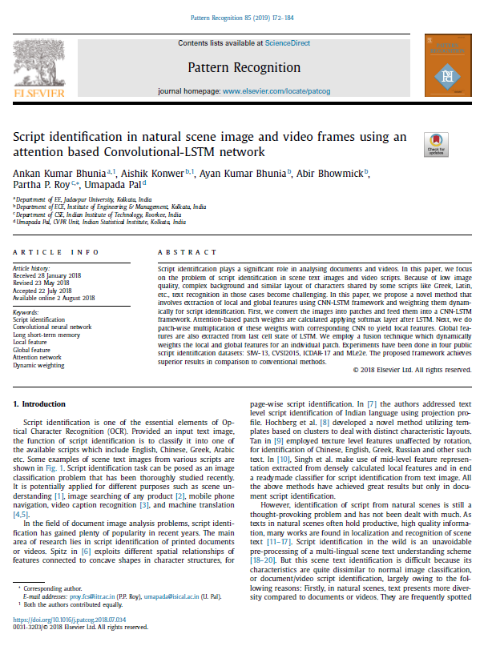
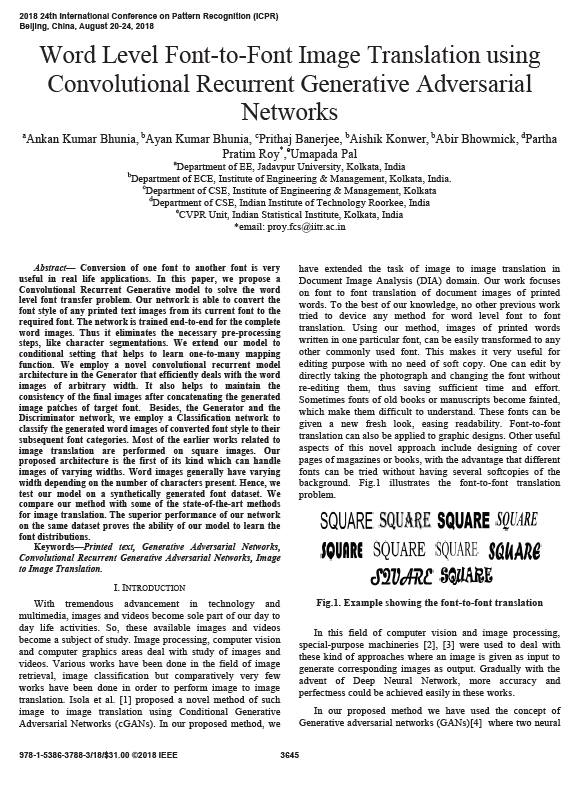
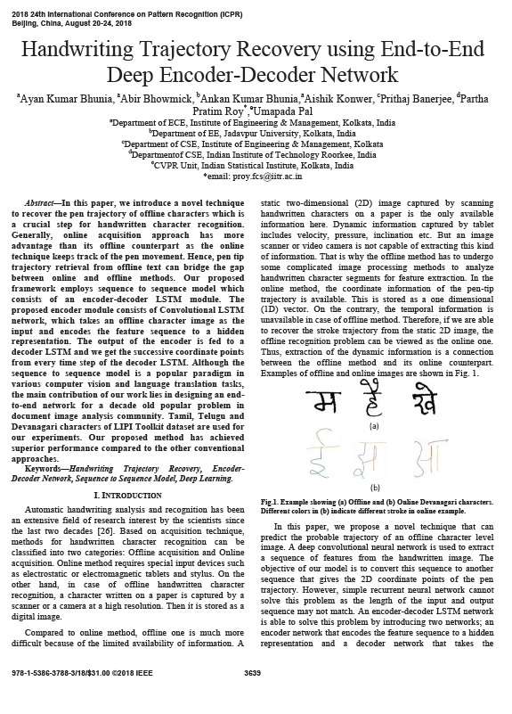

Hi, I am
I am an undergraduate student at the department of Electrical Engineering at Jadavpur University, Kolkata. My specific area of interest is Deep learning-based visual understanding. I am currently working under the supervision of Dr. Partha Pratim Roy, Assistant Professor, CSE department, Indian Institute of Technology, Roorkee. My research interests include: image retrieval problems, Scene image understanding problems, object detection problems, various problems in the Document analysis domain, Generative adversarial networks, image to image translation models, domain adversarial adaptation, deep metric learning and lots more. In near future, I want to explore more advance applications of Computer Vision. During my Summer internship (2018) program, I worked under Dr. Amit Kale at Robert Bosch, India on "Improving Segmentation performance using Synthetic to Real Image generation method".
Work
Experiences
- June 2018 - July 2018
- Computer Vision Lab, Robert Bosch, India
- Research Intern
- July 2016 - Present
- Jadavpur University
- Electrical Engineering
Publications
|  |
Script identification in natural scene image and video frames using an attention based Convolutional-LSTM network Ankan Kumar Bhunia, Aishik Konwar, Abir Bhowmik, Ayan Kumar Bhunia, Partha Pratim RoyPattern Recognition, 2019 [Paper] [Github] |
|  |
Word Level Font-to-Font Image Translation using Convolutional Recurrent Generative Adversarial Networks Ankan Kumar Bhunia, Ayan Kumar Bhunia, Prithaj Banerjee, Aishik Konwer, Abir Bhowmick, Partha Pratim Roy, Umapada PalInternational Conference on Pattern Recognition (ICPR), 2018. [Paper] |
|  |
Handwriting Trajectory Recovery using End-to-End Deep Encoder-Decoder Network Ayan Kumar Bhunia, Abir Bhowmick, Ankan Kumar Bhunia, Aishik Konwer, Prithaj Banerjee, Partha Pratim Roy, Umapada PalInternational Conference on Pattern Recognition (ICPR), 2018. [Paper] |

|
Staff line Removal using Generative Adversarial Networks Aishik Konwer, Ayan Kumar Bhunia, Abir Bhowmick, Ankan Kumar Bhunia, Prithaj Banerjee, Partha Pratim Roy, Umapada PalInternational Conference on Pattern Recognition (ICPR), 2018. [Paper] |
Technical
Skills
- Programming Languages
- Python / C / MATLAB.
- Deep Learning Framework
- Tensorflow / Keras / PyTorch
- Miscellaneous
- OpenCV / OpenAI gym / Numpy / Matplolib / Pandas / Scikit-Learn